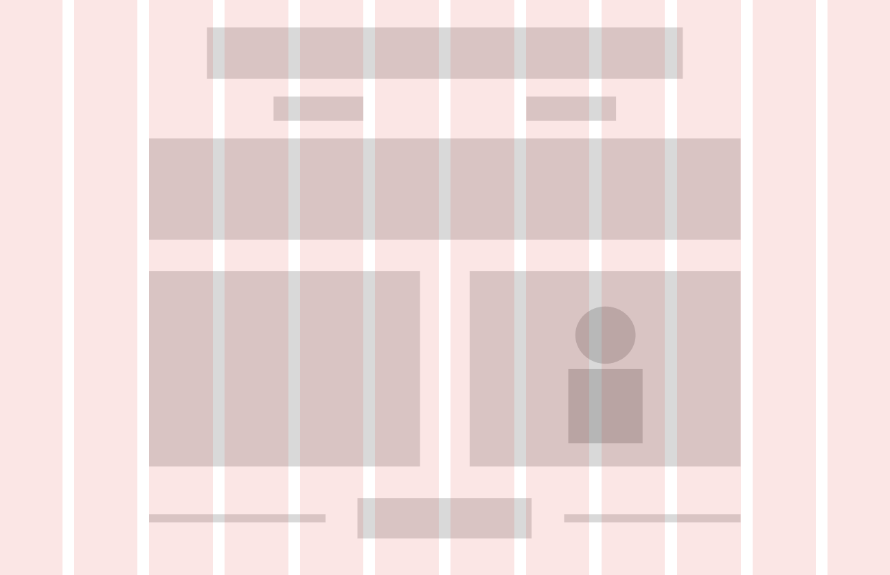

Building This Portfolio
Role: UI/UX Designer & Front-End Developer
Timeline: September 2026 - Present
Rather than relying on a website builder or template, I designed and developed this portfolio from scratch. It serves as a live demonstration of my technical proficiency in front-end development and my psychological approach to information architecture, actively bridging my studies in Computer Science and Cognitive Science.

DESIGN & ARCHITECTURE